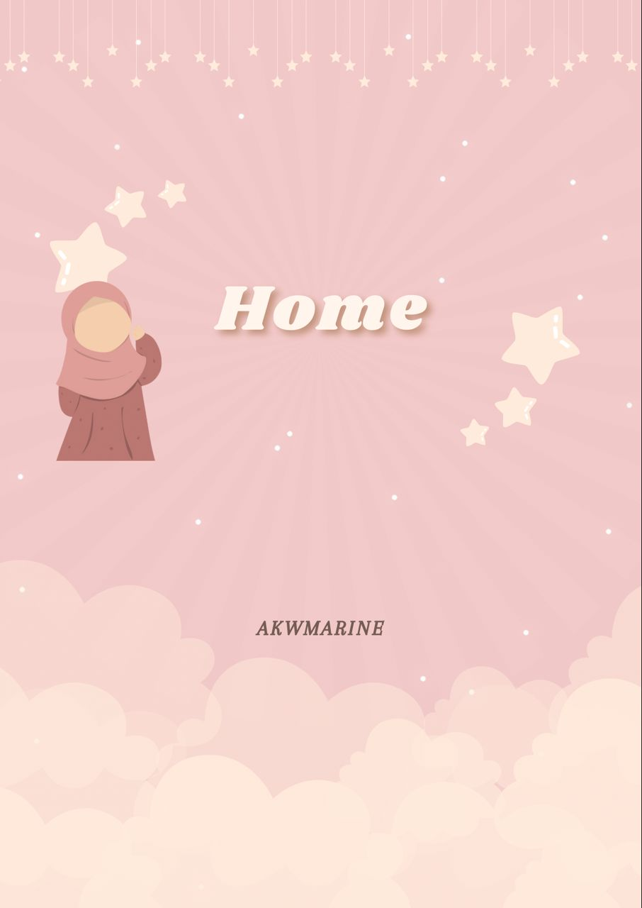

Bienvenue sur mon portfolio ! Je suis AKWMARINE, une passionnée de design graphique, photographie, d'écriture. À travers ce site, je souhaite partager avec vous mes projets, mes inspirations et mon parcours. Chaque création que vous découvrirez ici reflète mon engagement à allier créativité et technique. J'aime explorer de nouvelles idées et relever des défis, tout en m'efforçant de créer des œuvres qui captivent et inspirent. N'hésitez pas à parcourir mes travaux et à me contacter si vous souhaitez collaborer ou en savoir plus sur mes services. Merci de votre visite !
As salamou aleykoum wa rahmatu'Allah ! Je suis AKWMARINE, une professionnelle de design graphique, photographe et d'écriture basée à DAKAR DIAMNIADIO. Depuis 5ans, je me consacre à créer des visuels captivants, capturer des moments uniques, et d'utiliser la poésie pour d'écrire la beauté de l'ame. Ma passion pour le design graphique, la photographe et l'écriture m’a conduite à explorer différentes techniques et styles, ce qui m’a permis de développer une approche unique dans mon travail. J'aime travailler sur des projets variés, allant de illustration, photographie artistique, de l'écriture de poéme etc..., et je suis toujours à la recherche de nouveaux défis. Je crois fermement que chaque projet est une opportunité d'apprendre et de grandir. Mon objectif est de créer des œuvres qui non seulement répondent aux besoins de mes clients, mais qui racontent aussi une histoire. N'hésitez pas à me contacter pour toute question ou collaboration !
Mon parcours m'a permis de développer une expertise dans design graphique et je suis toujours à la recherche de nouvelles opportunités pour exprimer ma créativité. J'aime explorer diverses techniques et styles, ce qui me permet de créer des œuvres uniques qui captivent et inspirent. Chaque projet est pour moi une chance d'apprendre et de grandir, et je m'efforce de donner vie à des idées qui résonnent avec mon public.
Dans ce portfolio, vous découvrirez une sélection de mes travaux les plus significatifs dans le domaine de design graphique, d'écriture. Chaque projet reflète ma passion pour l'écriture. J'ai travaillé sur des projets variés, et j'ai toujours cherché à créer des œuvres qui racontent une histoire. Mon approche se concentre sur les maux de ma comunauté, ce qui me permet de livrer des résultats qui dépassent les attentes. Merci de prendre le temps d'explorer mon travail. Je suis impatiente de discuter de futures collaborations !
Je serais ravi(e) d'échanger avec vous ! Si vous avez des questions, des commentaires ou si vous souhaitez discuter d'une collaboration, n'hésitez pas à me contacter. Vous pouvez me joindre par e-mail ou via mes réseaux sociaux Je m'efforcerai de répondre dans les plus brefs délais. Merci de votre intérêt pour mon travail !